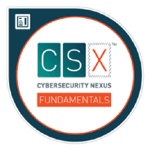
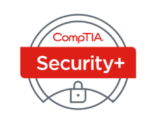
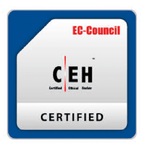
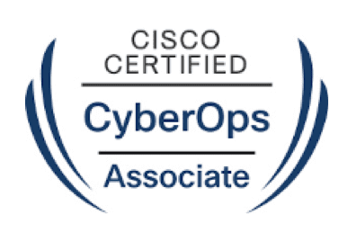
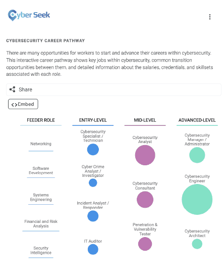

5.2.2 Professional Certifications
Cybersecurity certifications are a great way for you to verify your skills and knowledge and can
also boost your career.
Microsoft Technology Associate (MTA) Security Fundamentals
This certification is aimed at high school and early college students as well as those
interested
in a career change.
Palo Alto Networks Certified Cybersecurity Associate
This is an entry-level certification for newcomers who are preparing to start their career in
the
cybersecurity field.
ISACA CSX Cybersecurity Fundamentals Certificate

This certification is geared toward recent post-secondary graduates and those interested in a
career change. This certificate does not expire or require periodic recertification.
CompTIA Security+

This is an entry-level security certification that meets the U.S. Department of Defense
Directive
8570.01-M requirements, which is an important item for anyone looking to work in IT security for
the federal government.
EC Council Certified Ethical Hacker (CEH)

This certification tests your understanding and knowledge of how to look for weaknesses and
vulnerabilities in target systems using the same knowledge and tools as a malicious hacker but
in a lawful and legitimate manner.
ISC2 Certified Information Systems Security Professional (CISSP)

This is the most recognizable and popular security certification. In order to take the exam, you
need to have at least five years of relevant industry experience.
Cisco Certified CyberOps Associate

This certification validates the skills required of associate-level cybersecurity analysts
within
security operations centers.
Depending on your personal interests, there will be different job options for you to explore, some of
which can require specialized skills and professional certifications.
5.2.3 Cybersecurity Career Pathways
CyberSeek is a tool that provides detailed data about supply and demand in the cybersecurity job
market to help close the cybersecurity skills gap.

Click here
to view the interactive career pathway
which shows the range of jobs in cybersecurity, as well as detailed information about the salaries,
credentials and skill sets associated with each job.